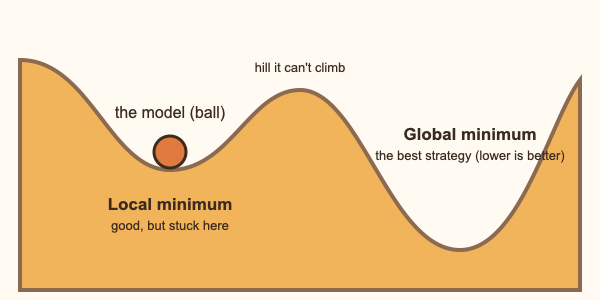

How It Learns
My reinforcement learning model learns through trial and error. Trial and error is the process of testing different actions, observing which ones work, and tuning the approach.
This is done through rewards. A reward can be given to a model if it makes the correct decision. It can also be penalized if it makes a wrong decision. For our 2048 model, I gave it a reward every time it merged pieces, worth more for bigger tiles. I also gave it a penalty for every move so that it gets pressured to make the most efficient moves.
Due to this process of learning, models get better over time. The more it learns, the better it is at solving the given problem. I ran my model thousands of times for it to be able to consistently beat the game.
However, there's a catch: local and global optima. When training, the model will find rewarding actions in its immediate region, eventually finding a local optimum. Even though there are better strategies in the long run, it can't find them because it's stuck in a local optimum.
You can imagine this as a landscape with two valleys. Think of height as penalty: lower is better. When the ball is dropped, it settles in the local minimum. If it could roll over the small hill, it would reach the global minimum; however, it is not able to go over the hill because its reward system is trying to maintain the lowest penalty and highest reward. In other words, gravity is too strong for the ball to roll up the hill and reach the global minimum.

An example image of two hills and a ball stuck in a "local minimum"
To try my RL 2048 model, check out Try It